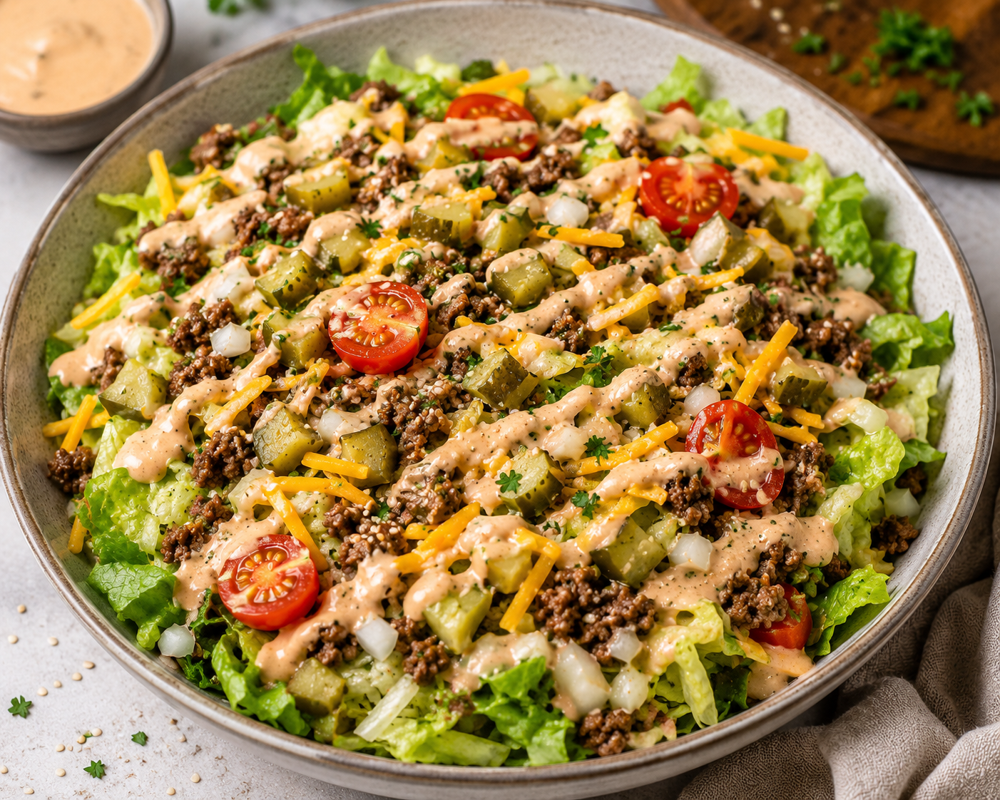

Big Mac Salat
Beschreibung
Dieser würzige Salat kombiniert frisches Gemüse mit gebratenem Hackfleisch, knackigen Zutaten und einem cremigen Dressing zu einer schnell und sättigenden Mahlzeit. Die Kombination aus frischen Komponenten und herzhaften Aromen erinnert an einen klassischen Burger, sorgt jedoch gleichzeitig für ein leichtes und ausgewogenes Gericht, das sich ideal für den Alltag eignet.
Zutaten
Angabe für 2 Personen
Für die Big Mac Soße
- 200 g Schmand
- 80 g Mayonnaise
- 1,5 EL Tomatenmark
- 1 EL Senf
- 1 EL Worcestersauce
- 1 EL Balsamicoessig
- 1 TL Paprikapulver
- 1 TL Currypulver
- 1 TL Knoblauchpulver
- Salz und Pfeffer
Für den Big Mac Salat
- 1 Kopf Eisbergsalat, in Streifen geschnitten
- 400 g Hackfleisch vom Rind
- 2 Strauchtomaten, in geviertelte Scheiben geschnitten
- 1 kleine rote Zwiebel, in dünne geschnitten
- 12 Cornichons, in Scheiben geschnitten
- 5 Scheiben Cheddar, in Streifen geschnitten
- 1 EL Olivenöl zum Braten
- Salz und Pfeffer
Zubereitung
- Olivenöl in einer Pfanne auf mittlerer Hitze erhitzen und darin das Hackfleisch scharf anbraten, bis es gebräunt ist. Anschließend salzen und pfeffern.
- In der Zwischenzeit in einer Schüssel die Big Mac Sauce aus allen Zutaten anrühren. Zum Schluss mit Salz und Pfeffer abschmecken.
- Den Eisbergsalat, die Tomaten, Zwiebeln und Gurken vermengen, das Hackfleisch darüberstreuen und anschließend den Käse.
- Nun alles großzügig mit der Big Mac Soße besprenkeln und servieren.
Weitere Anmerkungen
- Das Dressing kann je nach Geschmack mit weiteren Gewürzen verfeinert werden.
- Für einen zusätzlichen Schärfe-Kick kann auch frische Chili fein gehackt und unter den Salat gemischt werden.
- Der Salat sollte erst kurz vor dem Servieren mit dem Dressing vermischt werden.